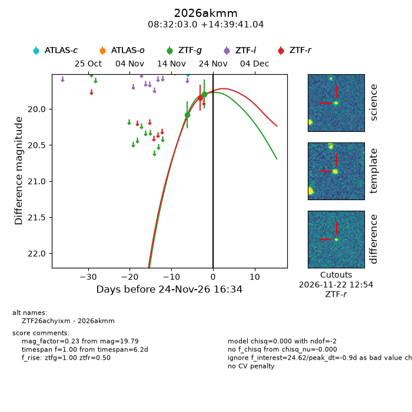
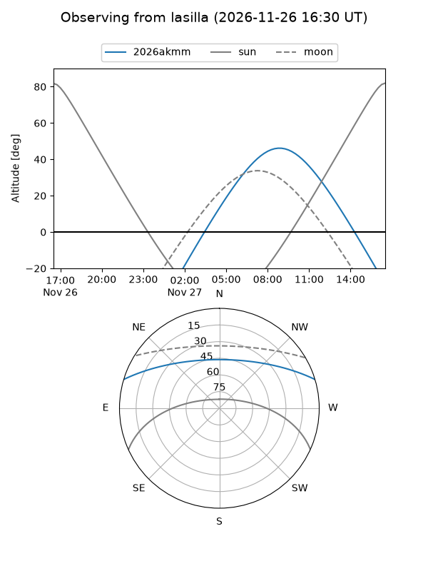
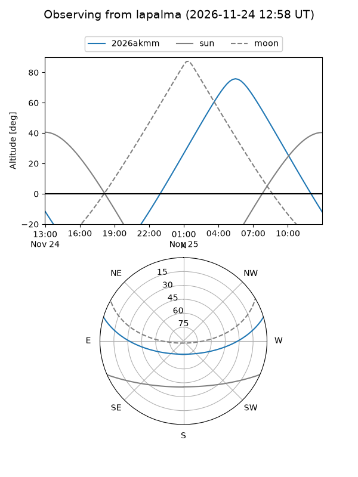
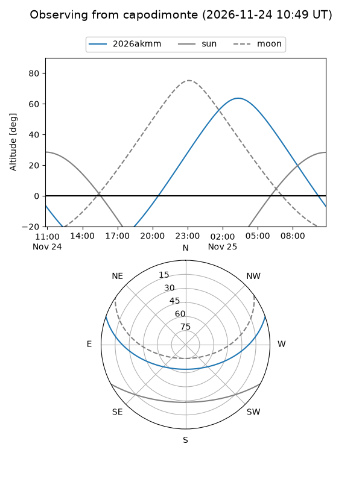
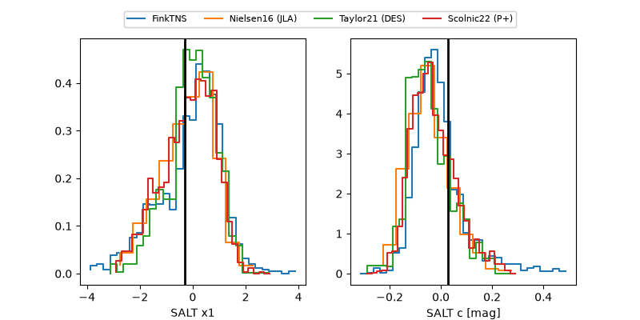

2026akmm
Target 2026akmm at 2026-11-24 16:36
Aliases and brokers:
FINK-ZTF: ztf.fink-portal.org/ZTF26achyixm
Lasair-ZTF: lasair-ztf.lsst.ac.uk/objects/ZTF26achyixm
ALeRCE-ZTF: alerce.online/object/ZTF26achyixm
YSE-PZ: ziggy.ucolick.org/yse/transient_detail/2026akmm
TNS name: wis-tns.org/object/2026akmm
Direct TNS query: direct search
alt names
ZTF26achyixm (ztf,fink_ztf)
2026akmm (tns,yse)
Coordinates:
equatorial (ra, dec) = 128.0124,+14.66140
equatorial (HMS+DMS) = 08:32:02.97,+14:39:41.04
galactic (l, b) = (210.4627,+28.77503)
Flags:
peak dt: -0.9
Photometry:
last ztfg=19.79, ztfr=19.85
2 ztfg, 1 ztfr detections
Lightcurve

Visibility



Additional plots
